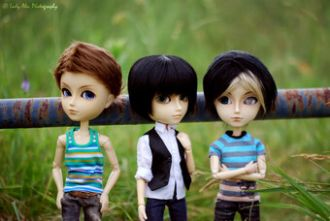

38-тай аавын минь амьд сэрүүн зүрх шигГуниг баяраар дэргэд нь амсаж өссөн голомт миньТунарч хөхрөх утааны үнэр нь нэг л өөр
Цаг агаар тэнэг халуун Хотын амьдрал нэгэн хэвийн Үргэлжилсээр, энх тайвны өргөн чөлөөӨчигдөр уусан юмны нөлөөГэнэт чи гарч ирсэн
What on earth am I meant to do In this crowded place there is only you Was gonna leave now I have to stay You have taken my breath away
Mark my words...That's all that I haveMark my words...Give you all I gotIn every way I willYou're the only reason why
Ended up on a crossroadTry to figure out which way to goIt's like you're stuck on a treadmillRunning in the same place
Feeling like I'm breathing my last breathFeeling like I'm walking my last stepsLook at all of these tears I've wept
Чи намайг орхиод гарсан Би чамтай байхыг хүсээгүй Өглөө бүхэн нэг л хэвийнҮдэш бүр би эндээс явмаар
She is smiling like heaven is down on earthSun is shining so bright on herAnd all her wishes have finally come trueAnd her heart is weeping.
Give me time to realize my crimeLet me love and stealI have danced inside your eyesHow can I be real
Sono umane situazioniquei momenti fra di noii distacchi e i ritornida capirci niente poigià... come vedisto pensando a te...
Come here, baby
I'm sending you an SmsI'm sending you an Sms
On a dark desert highway, cool wind in my hairWarm smell of colitas, rising up through the airUp ahead in the distance, I saw a shimmering light
Oh the wind whistles down The cold dark street tonight And the people they were dancing to the music vibe
When you were here before Couldn't look you in the eye You're just like an angel Your skin makes me cry
In my eyes, indisposedIn disguises no one knowsHides the face, lies the snakeAnd the sun in my disgraceBoiling heat, summer stench
Getting born in the state of MississippiPapa was a copperAnd Mama was a hippie
Ночь - зона риска, сказки для близкихКаплющий дождь обжигающим вискиМокрые волосы, губы так близкоБрызги неона снова и снова
Больше нечего ловитьВсё, что надо, я поймал,Надо сразу уходить,Чтоб никто не привыкал.

Кидай монетки, следи глазами. Они взлетают и исчезают. И незаметно ищи знавенье. Неуловимо его мгновенье. Эх дороги, пыль, тревоги.